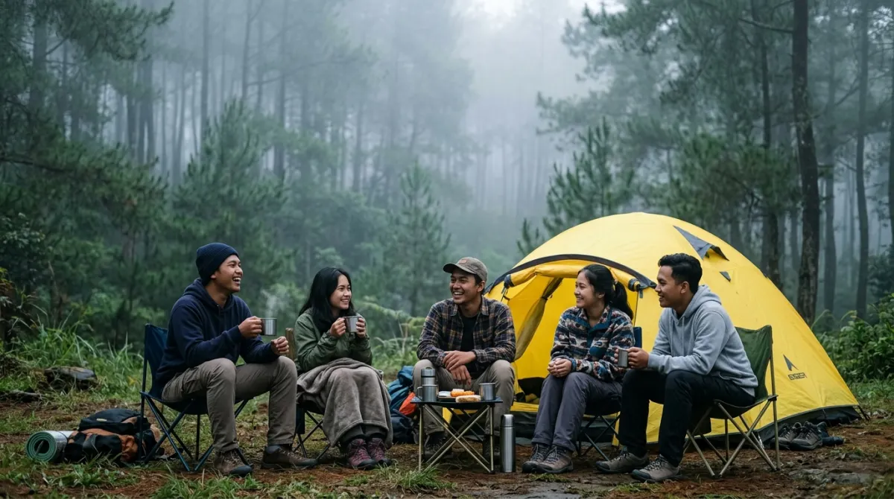
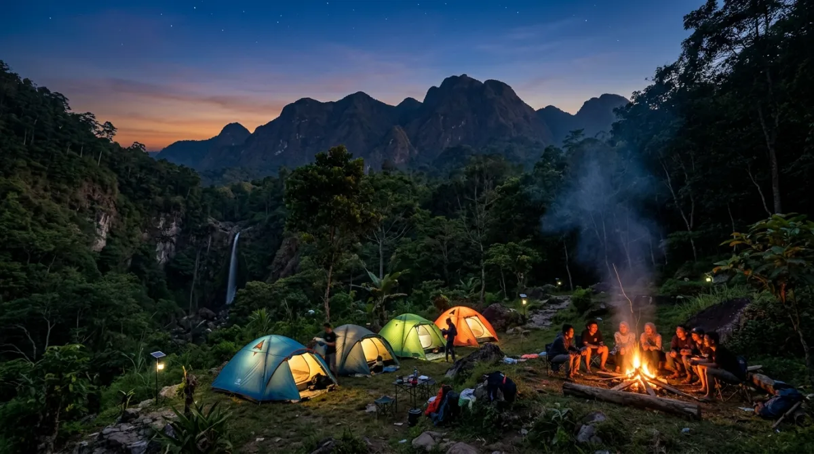

Kediri menyimpan permata tersembunyi di lereng Gunung Wilis yang sayang untuk dilewatkan.Pernah nggak sih, kamu merasa penat banget dengan tumpukan file di meja kerja yang rasanya nggak ada habisnya? Saat weekend tiba, niat hati ingin healing ke alam terbuka, tapi membayangkan padatnya jalanan menuju kawasan pegunungan yang itu-itu saja malah bikin pusing duluan.
Buat kamu yang mungkin sudah hatam dengan deretan campground estetik di kawasan Batu atau Malang, wajar kalau sesekali butuh suasana baru yang lebih tenang dan jauh dari hiruk-pikuk.
Jangan sampai jatah liburmu yang berharga menguap begitu saja hanya karena kamu ragu mengeksplorasi destinasi baru. Percayalah, menunda waktu istirahat hanya akan membuatmu burnout berkepanjangan dan pada akhirnya kamu menyesal karena kehilangan momen berharga untuk memulihkan diri.
Lewat panduan ini, aku mau ajak kamu melipir sejenak ke arah barat Jawa Timur. Yup, kita akan membahas rekomendasi tempat camping di Kediri. Kota ini ternyata menyimpan permata tersembunyi di lereng gunung yang bakal bikin kamu menyesal kalau sampai kelewatan.
Mengapa Kediri Menjadi Alternatif Liburan Alam yang Menarik?
Sebagai seseorang yang sering meriset dan mengunjungi berbagai lokasi outdoor di Jawa Timur, aku menyadari satu pola: destinasi mainstream perlahan mulai kehilangan esensi ketenangannya saat musim liburan tiba.
Kediri hadir menawarkan solusi dari masalah tersebut. Terjepit di antara gagahnya Gunung Wilis dan sisa-sisa letusan eksotis Gunung Kelud, topografi Kediri memberikan lanskap alam yang tidak kalah magis dari kota-kota wisata tetangganya.
Mencari tempat kemah di sini ibarat menemukan ruang meeting kosong dan tenang di saat seluruh lantai kantormu sedang sibuk-sibuknya menyiapkan laporan akhir tahun. Hawanya sejuk, masyarakat lokalnya ramah, dan yang paling penting, akses jalannya relatif sudah tertata dengan baik.
Biaya retribusi dan harga makanan di area sekitarnya juga masih sangat bersahabat dengan dompet. Kombinasi inilah yang membuat camping di Kediri patut masuk dalam bucket list liburanmu selanjutnya.
5 Rekomendasi Tempat Camping di Kediri yang Wajib Dicoba
1. Kawasan Wisata Besuki (Lereng Gunung Wilis)
Kalau kamu mencari hawa dingin yang menusuk tulang khas pegunungan lengkap dengan aroma getah pinus, Kawasan Wisata Besuki adalah kandidat utamanya. Berada di Kecamatan Mojo, area ini merupakan salah satu titik paling favorit untuk mendirikan tenda di Kediri.
Lanskapnya didominasi oleh hutan pinus yang menjulang tinggi, memberikan naungan alami yang teduh bahkan di siang bolong. Pastikan kondisi kendaraanmu prima, terutama kampas rem sebelum menanjak rutenya yang berkelok.
- Akses Jalan: Beraspal mulus namun menanjak curam, bisa dilalui motor dan mobil.
- Estimasi Biaya: Tiket masuk sekitar Rp 10.000 - Rp 15.000 per orang.
2. Bukit Dhoho Indah (BDI)
Buat kamu yang ingin mengajak keluarga, terutama anak-anak, tapi nggak mau repot dengan rute ekstrem, Bukit Dhoho Indah bisa jadi pilihan win-win solution. Berlokasi di Desa Tiron, Kecamatan Banyakan, BDI sebenarnya adalah taman rekreasi terpadu yang juga menyediakan area campground khusus.
Fasilitas di sini sudah sangat proper. Ada toilet bersih, musala, hingga warung makan yang buka sampai malam. Anak-anak bisa bermain di area outbound mini pada siang hari, dan malamnya keluarga bisa berkumpul mengelilingi api unggun.
- Akses Jalan: Sangat mudah dijangkau, dekat dengan jalan raya utama.
- Estimasi Biaya: Tiket masuk kisaran Rp 20.000 per orang.

Suasana campground di Kediri yang tenang dan asri — jauh dari keramaian kota, dekat dengan ketenangan alam.3. Camping Ground Air Terjun Dolo
Masih berada di gugusan lereng Gunung Wilis, terdapat Air Terjun Dolo yang ikonik. Di dekat area parkir dan pintu masuk air terjun ini, terdapat lahan datar yang sering dialihfungsikan sebagai area camping oleh para pecinta alam.
Daya tarik utama spot ini adalah kabut tebal yang sering turun di sore hari dan suara gemuruh air terjun dari kejauhan yang bertindak sebagai white noise alami. Mengingat lokasinya yang cukup tinggi, udara malamnya bisa turun drastis, jadi pastikan kamu membawa sleeping bag tebal dan jaket windbreaker.
- Akses Jalan: Menanjak ekstrem di beberapa titik terakhir, pengemudi pemula ekstra hati-hati.
- Estimasi Biaya: Tiket masuk kawasan sekitar Rp 15.000 per orang.
4. Hutan Pinus Plapar
Sedikit bergeser ke Kecamatan Tarokan, ada Hutan Pinus Plapar yang menawarkan sensasi camping di Kediri dengan nuansa yang lebih intim dan sepi. Tempat ini belum seramai Besuki, sehingga sangat pas untuk kamu yang mendambakan me-time atau quality time berdua dengan pasangan.
Kontur tanahnya cukup bersahabat untuk mendirikan tenda dome. Kamu juga bisa memasang hammock di antara pepohonan pinus sambil menyeduh kopi manual.
- Akses Jalan: Cukup baik, didominasi aspal dan sedikit makadam menjelang lokasi.
- Estimasi Biaya: Hanya biaya kebersihan dan parkir sekitar Rp 10.000.
5. Kawasan Wisata Sumber Podang
Jika empat rekomendasi sebelumnya berfokus pada ketinggian dan hutan pinus, Sumber Podang di Kecamatan Semen memberikan nuansa yang berbeda: kemah di tepi aliran sungai berbatu yang jernih.
Mendirikan tenda di dekat aliran air sungai pegunungan memberikan efek relaksasi instan. Pagi harinya, kamu bisa sekadar merendam kaki di air dingin yang segar. Tempat ini sering dijadikan lokasi family gathering karena medannya yang landai. Di sekitar area perkemahan juga banyak warga lokal yang menjajakan kuliner khas seperti tiwul dan madu murni.
- Akses Jalan: Lebar dan beraspal mulus, mudah dijangkau mobil keluarga.
- Estimasi Biaya: Retribusi masuk sekitar Rp 10.000 per orang.
Persiapan Ekstra Sebelum Berkemah di Alam Bebas
Meskipun beberapa lokasi di atas menawarkan fasilitas yang cukup memadai, alam tetaplah alam yang cuacanya sering kali di luar kendali kita. Layaknya menyiapkan backup plan saat server kantor down, kamu juga butuh persiapan ekstra:
- Cek Prakiraan Cuaca: Selalu pantau aplikasi cuaca sebelum berangkat. Hindari memaksakan diri jika peringatan cuaca buruk sedang berlangsung.
- Peralatan Memasak Proporsional: Bawa kompor portable dan gas cadangan. Makanan hangat adalah penyelamat utama saat udara gunung mulai menusuk.
- Kantong Sampah (Trash Bag): Jadilah traveler yang bertanggung jawab. Bawa pulang kembali semua sampah plastikmu.
Kesimpulan: Jangan Tunda Waktu Istirahatmu
Terkadang, kita terlalu sibuk berlari mengejar karier dan materi, sampai lupa caranya berhenti sejenak untuk bernapas. Setumpuk pekerjaan di kantor itu memang penting, tapi kesehatan mental dan fisikmu jauh lebih berharga.
Percayalah, sepuluh tahun dari sekarang, kamu tidak akan mengingat seberapa keras kamu lembur di akhir pekan ini, tapi kamu pasti akan mengingat momen hangat saat kamu menyeruput kopi sambil melihat kabut turun perlahan di lereng Gunung Wilis.
Jadi, tunggu apa lagi? Kunci kalendermu, siapkan peralatan tendamu, dan wujudkan rencana liburan dengan mencoba sensasi camping di Kediri akhir pekan ini. Selamat merencanakan perjalanan yang seru!
FAQ